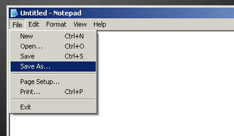
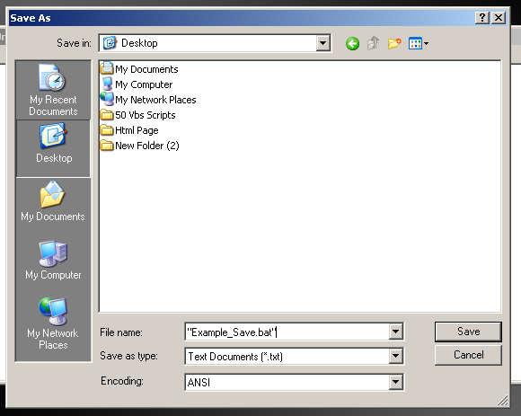
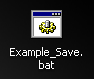
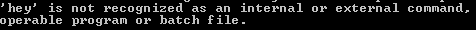
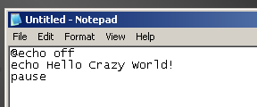
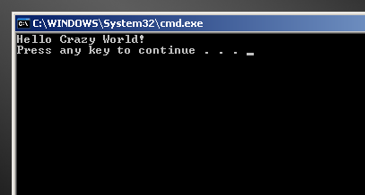

Batch is a easy scripting language that comes with all versions of
windows. Why learn it? Well batch can help you do some very easy task,
without having to code a huge program for it. Let's say you want to
send a message over your network to everyone saying your workstation
shutoff, and then you want it to shutdown your computer. Well you can
just create a simple batch file using the "netsend" and "shutdown"
commands and save it, and when ever you want it to do that then just
run the batch file and that's it! No need to code a huge c program to
do a simple task such as that. Batch makes it easy to perform simple
task on your machine. Plus, I bet you have seen this window before:

Once you learn batch you can issue commands to this window called
"command prompt" and have it perform commands for you! Batch is worth
learning and this tutorial is going to show you how to. I am not going
to go over every single command for you. I am only going to show you
how to perform simple task, and basically half of the language itself.
Once I teach you this half you will have no problems learning the rest.
This is what makes batch so great. Once you get the concept of how it
works down, you can easily master the rest. I wish all programming
languages where like that! So let's start off. Also if you like this
article please vote for me on pscode.com. I took time out of my life,
to write this for you. So you can learn from it. I even wrote examples
that where commented all over so a newbie could understand them! So
Please vote for me. I gave this wonderful thing to you, give me five
globes in return or at least a "good job" comment!
1. How does a
Scripting Language Work

A scripting
language works alot more different then a w32 application does. What's
so different you ask? Basically a scripting language is a text file,
full of commands. When the text file is saved with a certain extension
(.vbs, .js, .bat) it becomes a script. When you execute that script, a
file called the host file runs. This host file, opens up the script and
performs the commands written inside of it. If it can not understand a
command it gives you a nasty error message. The host file itself is a
w32 application usually written in c/c++ or another higher level
language. Now if you didn't understand this, then this example will
make it more clear to you. Let's say one day a man named bob finds a
lamp in his closet. He sees how wonderful the lamp is and decides to
clean it. While he is cleaning it with a old cloth, a genie appears
from the lamp. The Genie says to bob "Give me three commands." Bob
gives the genie three commands, and the genie does what bob told it to
do. When bob has no more commands to give to the genie then, the genie
goes back to the bottle. This is how a scripting language works! You
give the host file a command, and it does it!
2. How to create a batch file
Now before we continue on I must first show you how to create a batch
file. Now, please note we will not make the file do anything at all! I
am just showing you how you will save a file so its a valid batch file.
So dont do anything stupid like try to put commands into the file! Ok
the 1st thing you will need is Windows Notepad. You can launch notepad
by clicking on start > run and type in notepad and hit ok. Once you
have notepad up, that is the only thing you will need! So let's save
the file. Now remember what I said before, This is only going to show
you how to save a batch file. Later i am going to show you how to put
commands into it, and make it do something! So now go to the file menu
and click on file > save as like the below screen shot.

Now once you have done this, the save dialog appears. In the file name
area you see it says *.txt. This is where you want to change it. Type
in "Example_Save.bat" with the quotation marks. So now the screen
should look like this on windows xp, and something similar on windows
9x.

Now if it does then your doing good! Now save the file to your desktop.
Once this is done minmize notepad, and go to your desktop. What do you
see that's diffrent? The file! Example_Save is there, but its not a
text document and it has a wierd looking icon. It should look like this:

This is your 1st batch file! Every single time you make a batch file
you want to make sure you save it like this. Also, in the future you
can name is something diffrent besides "Example_Save" You can name it
anything as long as you have the .BAT part at the end of it! Now, if
you click on this file it will pop up a black window and then the
window will go away. Why did it go away so quick? Because your batch
file didnt do anything! Remember the genie in the bottle
example I told you. Now lets get to coding it!
3. Goot Job m8te
Lol, Is that not wierd how younger
kids in the U.K say Good Job m8te with the 8te like that. I like it,
even though Im not european! But who cares about that. (Just so you
know, in this tutorial I wont speak arabic. You can turn to a news
station if you want that) Now here is the fun part. We actually get to
make your batch file do something! So let's start. As I said with the
genie and the bottle example, you have to give the "host file" a
command to do. Now here's the cache to this. You have to give it a
command it can understand. You cant just say
Hey host file open notepad or else!
Nope that wont work and the host will get mad and spit out a nasty
error that looks like this

Nope you have to speak it's language and give it commands it can
understand. I am going to teach you these commands. Before I do let me
show you where to put the commands once I teach you them. Remember how
we saved the batch file in notepad? Well, now where going to do
something wild and crazy. Where going to add some commands to that
batch file. Open notepad again and type the following:
--------------------- Type what is After this line
----------------------------------------
@echo off
echo Hello Crazy World!
pause
----------------- Type what is above this line
-------------------------------------------
Once you have that typed it should look like this in notepad:

Notice how each command you have to put on a seperate line. You always
have to do this! If you dont you get the nasty error message from the
host file. now save the file to your desktop as HCW.Bat and run the
batch file! Look it does something! The little black window appears and
looks like this:

Yes You made it do that, and you did it with the commands that I told
you to typed! Now you know where to put the commands, how to save it as
a batch file. Now all you need is to learn each of the diffrent
commands out there. So let's learn the commands!
4. The Commands
Now I am going to assume you understood all of the above. If you dont click here and
review, but if you did you may continue. This section is going to show
you the basic batch commands. These commands you can type into notepad,
save it as a batch file and run it. Please be carefull because some
commands, like the delete command and format command can be harmfull to
your system so watch out! I will always warn you about what not to do
on your own system, Unless you like reformatting it. (Some one told me
the other day re-formatting turns them on. Wow, I have talked to alot
of wierdo's in my 15 years of life but that was more then
wierd...) Ok lets get started and I hope that you have liked this
tutorial. I tried hard to make it easy and fun at the same time...
Echo Command
You can do alot with echo!
It's the only command, I can think of at the moment that you can use
for two things, and do two diffrent task, with the same command. With
echo you can do two things, you can write or append to a text file, or
you can show text on the screen like we did on the example above where
we showed the text hello crazy world. We use the command like this to
show text on the screen.
echo %text%
you replace %text% with the text you want it to show. Now, let's say
you want to show the text America the great, you would type in
echo America the great!
and it does not matter like in linux/unix if you type it in caps, or
not or in that wIeRd mUlTiTeXt like some people do. It will work no
matter how you type it, as long as the command is echo %text%. Now
let's say you want to create a text file in the c:\ drive and then you
want to write the words hello world to the text file. You use the echo
command once again. Like this
echo hello world >c:\hello.txt
so the above will create a file in the c:\ drive called hello.txt with
the words hello world. Now lets say you want to append to the file you
will just add another > to the end of it. So it will be like this,
if you want to append to autoexec.bat.
echo America the great >>c:\autoexec.bat
and that's it! i bet this is the longest tutorial on the echo command...
Tip: This tip may be useless to
you now, but in the future it may be worth something. You can make a
batch file have a blank line in a batch file like this
echo.
and it will show nothing on
that line and go to the next command. Try it sometimes, you can make
your batch files look alittle nicer...
%0 Variable
What is the magical symbol? Well I am going to "Attempt" to explain it.
Each file has a path in windows. For example, if a file is in the c:\
drive and the file is called hello.txt then the path to the file is
c:\hello.txt. That is the path. Now basically all the %0 means, is the
path of the batch file. Here is a example. Put this in a batch file and
run it.
@echo off
echo I am located at %0
pause
now run the batch file. It will say the location of the batch file. Now
you should be able to get this now. Now what can I do with this?
Lets say you want to delete your batch file? You can do this:
del %0
or lets say you want to copy your batch file to the c:\ drive you do
this
copy %0 c:\test.bat
This is kind of hard to explain, but I did my best.
Tip: Want to add some color to your batch files? Add
the color command. Only avaliable on windows nt, so you windows 98
users to bad. Anyway, you can add some color with this command. How?
Well type in color /? at command prompt for more information...
Copy Command
Have you ever wanted to copy a file to another location of your
hard-drive? I have! Well in batch you can use the copy command.
Basically all this command, is takes a file(s) and copies the file(s)
to a location of your choice. Here is a example, I am going to make a
backup of autoexec.bat. This file is a very vital file for windows 9x
machines. If deleted then the os may not even load. So Im making a
backup so if I need to restore it later. (xp users dont have to worry
on autoexec.bat) So I would do this..
copy c:\autoexec.bat c:\windows\autoexec.bat.bak
this will copy c:\autoexec.bat file to c:\windows\autoexex.bat.bak. Now
I have a backup! Let's say I want to copy all of the batch files in the
c:\ drive to c:\windows. I do this:
copy c:\*.bat c:\windows\*.bat
and if I wanted to copy everything in the c:\ drive to lets say the a:\
drive i would do this
copy c:\*.* a:\*.*
and that's it! You should know how the copy command works now!
*.*
What are they? There the two wierd little signs that you see alot.
Well, they mean anything. Like here is a example of wildcards.
Joe: Hello What do you want to
eat?
Jay: *.*
Joe: Ok ill fix you anything we
have...
See *.* means anything! If you
do it like this
echo c:\*.bat
it means to show all of the bat
files, no matter what there names are! I think you should get wildcards
by now!
Delete Command
Every language has a delete command. In vb the delete command is namend
kill... What was microsoft thinking when they name a function kill?
Anyway, in batch the command is called del. Here is some samples of the
commands. Let say I want to delete c:\file.txt. I would do this.
del c:\file.txt
and that's it! Now let's say I wanted to delete all of the text files
on the a:\ drive (usually a floppy drive) I would do this
del a:\*.txt
and let's say I wanted to delete every file on the a:\ drive. I would
do this
del a:\*.*
The delete command is simple to use, and is not hard at all! You should
know how to use it, if you have understood this tutorial so far.
Mkdir & Rmdir Commands
These two commands are very usefull. Make directory basically means
make a folder, and rmdir means remove a folder. Here is how you create
a folder in the c:\ drive called preview.
mkdir c:\preview
and if you want to delete the folder c:\preview you remove it!
rmdir c:\preview
and that's it! A very simple command this is.
Cls
I have not used this in my batch files before, but you may want to.
What does the magical words cls mean? It means clear screen. All it
does is take everything inside of the black window that batch files run
in, and it clears all of the text in it! That's it. How do you use this
command? Well it's kind of a stupid question to ask, you use it like
this
cls
and that's it! Please no more stupid questions!
Pause
What does this word mean! It's driving me crazy you say? Well done go
insane over the pause command, it's not a big issue. The pause command
basically says "hey wait for a second, let the user tell me when to
continue." What i mean by this is, it stops the batch file from issuing
any more commands until the user presses some kind of key on the
keyboard. Once the user presses a key on the keyboard, the batch files
continue!
Loopie
Loo
Now what are loops? I though they where pointless at 1st, but boy was I
wrong! Loops allow you to do a piece of the code over and over again
instead of having to re-write it...Lets say I want it to print the time
every second of the day over and over I would do this
@echo off
:loop
echo %time%
goto loop
and that's it! The go to command allows you to jump somewhere else in
your code. Like look at this example
@echo off
echo if file exist c:\autoexec.bat then goto 9x
echo blah
echo stupid stuff here
9x:
echo goodbye
exit
see now if the file c:\autoexec.bat it jumps all the way down to the
word 9x: and continues the code from there.. Thats a label, and thats
how the goto , and lables work. Now you know how to make a label, how
to make a loop, and jump to a label!
Format
command
This command is used to delete all
files, folders and everything else from a disk. Lets say I want to
delete everything from my floopy disk, I would type in
Format A:
and it will wipe everything off the
hard-drive.
In my next tutorial I
am going to go into more, I am going to be alot more advanced, alot
more funnie (yeah right) and alot more material. I am really wanting to
release this. This is part one and part two is soon to follow. Also
please remember if you want to live vote for me. Lol, Just kidding
Please vote for me. I would appreciate it. Also here is a list from the
dos help files of all of the commands avaliable for dos that we will be
getting into later.
ASSOC Displays or modifies file extension
associations.
AT Schedules commands and programs
to run on a computer.
ATTRIB Displays or changes file attributes.
BREAK Sets or clears extended CTRL+C checking.
CACLS Displays or modifies access control lists
(ACLs) of files.
CALL Calls one batch program from another.
CD Displays the name of or changes
the current directory.
CHCP Displays or sets the active code page
number.
CHDIR Displays the name of or changes the current
directory.
CHKDSK Checks a disk and displays a status report.
CHKNTFS Displays or modifies the checking of disk at boot time.
CLS Clears the screen.
CMD Starts a new instance of the Windows
command interpreter.
COLOR Sets the default console foreground and
background colors.
COMP Compares the contents of two files or sets
of files.
COMPACT Displays or alters the compression of files on NTFS
partitions.
CONVERT Converts FAT volumes to NTFS. You cannot convert the
current drive.
COPY Copies one or more files to another
location.
DATE Displays or sets the date.
DEL Deletes one or more files.
DIR Displays a list of files and
subdirectories in a directory.
DISKCOMP Compares the contents of two floppy disks.
DISKCOPY Copies the contents of one floppy disk to another.
DOSKEY Edits command lines, recalls Windows commands, and
creates macros.
ECHO Displays messages, or turns command
echoing on or off.
ENDLOCAL Ends localization of environment changes in a batch file.
ERASE Deletes one or more files.
EXIT Quits the CMD.EXE program (command
interpreter).
FC Compares two files or sets of
files, and displays the differences
between them.
FIND Searches for a text string in a file or
files.
FINDSTR Searches for strings in files.
FOR Runs a specified command for each
file in a set of files.
FORMAT Formats a disk for use with Windows.
FTYPE Displays or modifies file types used in file
extension associations.
GOTO Directs the Windows command interpreter to
a labeled line in a
batch program.
GRAFTABL Enables Windows to display an extended character set in
graphics
mode.
HELP Provides Help information for Windows
commands.
IF Performs conditional processing
in batch programs.
LABEL Creates, changes, or deletes the volume label
of a disk.
MD Creates a directory.
MKDIR Creates a directory.
MODE Configures a system device.
MORE Displays output one screen at a time.
MOVE Moves one or more files from one directory
to another directory.
PATH Displays or sets a search path for
executable files.
PAUSE Suspends processing of a batch file and
displays a message.
POPD Restores the previous value of the current
directory saved by PUSHD.
PRINT Prints a text file.
PROMPT Changes the Windows command prompt.
PUSHD Saves the current directory then changes it.
RD Removes a directory.
RECOVER Recovers readable information from a bad or defective
disk.
REM Records comments (remarks) in batch
files or CONFIG.SYS.
REN Renames a file or files.
RENAME Renames a file or files.
REPLACE Replaces files.
RMDIR Removes a directory.
SET Displays, sets, or removes Windows
environment variables.
SETLOCAL Begins localization of environment changes in a batch file.
SHIFT Shifts the position of replaceable parameters
in batch files.
SORT Sorts input.
START Starts a separate window to run a specified
program or command.
SUBST Associates a path with a drive letter.
TIME Displays or sets the system time.
TITLE Sets the window title for a CMD.EXE session.
TREE Graphically displays the directory
structure of a drive or path.
TYPE Displays the contents of a text file.
VER Displays the Windows version.
VERIFY Tells Windows whether to verify that your files are
written
correctly to a disk.
VOL Displays a disk volume label and
serial number.
XCOPY Copies files and directory trees.